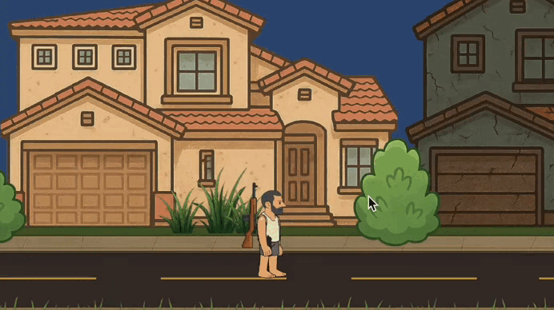

The game I’ve been developing (intermittently)
This game has existed for a while… just not consistently.
I work on it intermittently, mostly on weekends and, when possible, on weekday nights. It’s not a project with clear deadlines or aggressive sprints. It’s something I slowly push forward, whenever time and energy allow.
Still, I wanted to document something that already feels like real progress.
Early development (very early)
The game is in an early stage. There are no finished levels, no balance, no final enemies. I’m building the basics: how the character moves, aims, shoots, and how all of that feels together.
Weapon switching
One of the things I really wanted to get right was weapon switching. I didn’t want a simple appear/disappear. I wanted the body to follow the movement and for the switch to feel intentional.
Separating the body was key
The character is built with separated arms, head, torso, and legs. This allows me to blend animations, like walking while aiming, without the character feeling stiff.
Weapon feel
I started adding recoil, muzzle flash, and small visual tweaks. It’s not the final version, but the weapon already feels better when shooting.

Going slow still counts
Progress is slow, yes. But it’s happening. Working on it only on weekends or at night makes every step matter more. For now, that’s enough.
Comments